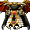
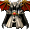
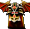
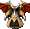
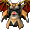

※各怪物的編輯請由標題的鉛筆圖示進行。掉落物品的編輯也可以從掉落物品欄的
庫修隆
盧米納
莉希涅
斯坎達倫
歐費爾
蓋赫那
戴莫尼翁
１｜２｜３｜４｜５｜６｜７｜獎勵1｜獎勵2｜獎勵3
出現怪物
夏莫科（紅）
| 夏莫科（紅） | Lv | AC | MC | AAR | SAR | 掉落物品 |
| HP:70050 | 110 | -55 | -10 | 20 | 40 | 帕爾塞斯寶珠(中)、帕爾塞斯信仰寶珠、 斯坎達倫之戒指寶珠、斯坎達倫之鎧甲寶珠、斯坎達倫之腰帶寶珠、 斯坎達倫之戒指寶珠、斯坎達倫之鎧甲寶珠、斯坎達倫之腰帶寶珠、 斯坎達倫之板甲、 斯坎達倫之女板甲、 斯坎達倫之女板甲、 斯坎達倫之緊身衣、 斯坎達倫之緊身衣、 斯坎達倫之女緊身衣、 斯坎達倫之女聖袍、斯坎達倫之聖袍、 斯坎達倫之法衣、 斯坎達倫之法衣、 斯坎達倫之女法衣、 斯坎達倫之女法衣、 斯坎達倫之武服、 斯坎達倫之女武服、斯坎達倫法薩德、斯坎達倫卡夫坦、帕爾塞斯的結晶 |
| 善惡值 | 信仰值 | 金錢 | 攻擊屬性 | 防禦屬性 | ||
| 16 | 16 | 651 | 隨機 | 隨機 | ||
| STR | DEX | INT | WIS | CON | ||
| 81 | 21 | 21 | 21 | 81 |
備註 瀕死時逃亡
 斯特納（綠）
斯特納（綠）
| 斯特納（綠） | Lv | AC | MC | AAR | SAR | 掉落物品 |
| HP:46062 | 110 | -80 | 0 | 20 | 40 | 帕爾塞斯信仰寶珠(中・上？)、帕爾塞斯寶珠(中)、斯坎達倫之鎧甲寶珠、斯坎達倫之神聖寶珠、帕爾塞斯的結晶、貝塔板甲、 艾德礦石、斯坎達倫之腰帶、[1次]各武器2階段升級捲軸 艾德礦石、斯坎達倫之腰帶、[1次]各武器2階段升級捲軸 |
| 善惡值 | 信仰值 | 金錢 | 攻擊屬性 | 防禦屬性 | ||
| 20 | 20 | 577 | 隨機 | 隨機 | ||
| STR | DEX | INT | WIS | CON | ||
| 81 | 21 | 21 | 21 | 81 |
備註
斯特納（黃）
| 斯特納（黃） | Lv | AC | MC | AAR | SAR | 掉落物品 |
| HP:61313 | 110 | -50 | -15 | 20 | 35 | 帕爾塞斯寶珠(中)、帕爾塞斯信仰寶珠、斯坎達倫之鎧甲寶珠、斯坎達倫之戒指寶珠、斯坎達倫之腰帶寶珠、斯坎達倫之神聖寶珠、帕爾塞斯的結晶、斯坎達倫之板甲、斯坎達倫之女板甲、斯坎達倫之緊身衣、斯坎達倫之女緊身衣、斯坎達倫之女聖袍、斯坎達倫之聖袍、斯坎達倫之法衣、斯坎達倫之女法衣、斯坎達倫之武服、斯坎達倫之女武服、斯坎達倫里法因德、斯坎達倫法薩德、斯坎達倫卡夫坦、 [1次]鎧甲2階段升級捲軸、[1次]戒指2階段升級捲軸 [1次]鎧甲2階段升級捲軸、[1次]戒指2階段升級捲軸 |
| 善惡值 | 信仰值 | 金錢 | 攻擊屬性 | 防禦屬性 | ||
| 26 | 26 | 593 | 隨機 | 隨機 | ||
| STR | DEX | INT | WIS | CON | ||
| 81 | 21 | 21 | 21 | 81 |
守護鎖定
[斯特納]
| ［斯特納］ | Lv | AC | MC | AAR | SAR | 掉落物品 |
| HP:90556 | 110 | -80 | 0 | 20 | 40 | 帕爾塞斯信仰寶珠(中・上？)、帕爾塞斯寶珠(中)、斯坎達倫之鎧甲寶珠、斯坎達倫之腰帶寶珠、斯坎達倫之神聖寶珠、帕爾塞斯的結晶、斯坎達倫之板甲、斯坎達倫之腰帶、野蠻重擊、 靈魂反射、阿撒托斯、黑暗力量洞、邪惡先鋒、黑暗波、波特拉姆魔像召喚 靈魂反射、阿撒托斯、黑暗力量洞、邪惡先鋒、黑暗波、波特拉姆魔像召喚 |
| 善惡值 | 信仰值 | 金錢 | 攻擊屬性 | 防禦屬性 | ||
| 50 | 50 | 823~ | 隨機 | 隨機 | ||
| STR | DEX | INT | WIS | CON | ||
| 81 | 21 | 21 | 21 | 81 |
遠距離
安提拉凱農（綠）
| 安提拉凱農（綠） | Lv | AC | MC | AAR | SAR | 掉落物品 |
| HP:50006 | 110 | -50 | -15 | 20 | 35 | 帕爾塞斯信仰寶珠(中・上？)、帕爾塞斯寶珠(中)、斯坎達倫之腰帶、斯坎達倫之鎧甲寶珠、斯坎達倫之腰帶寶珠、斯坎達倫之戒指寶珠、斯坎達倫之神聖寶珠、帕爾塞斯的結晶、斯坎達倫之腰帶（＠3,1）、[1次]耳環2階段上升捲軸、[1次]耳環3階段升級捲軸、[1次]護膝2階段升級捲軸、[1次]頭盔2階段升級捲軸、[1次]戒指2階段升級捲軸、[1次]戒指3階段升級捲軸 |
| 善惡值 | 信仰值 | 金錢 | 攻擊屬性 | 防禦屬性 | ||
| 36 | 36 | 588 | 隨機 | 隨機 | ||
| STR | DEX | INT | WIS | CON | ||
| 81 | 21 | 21 | 21 | 81 |
備註